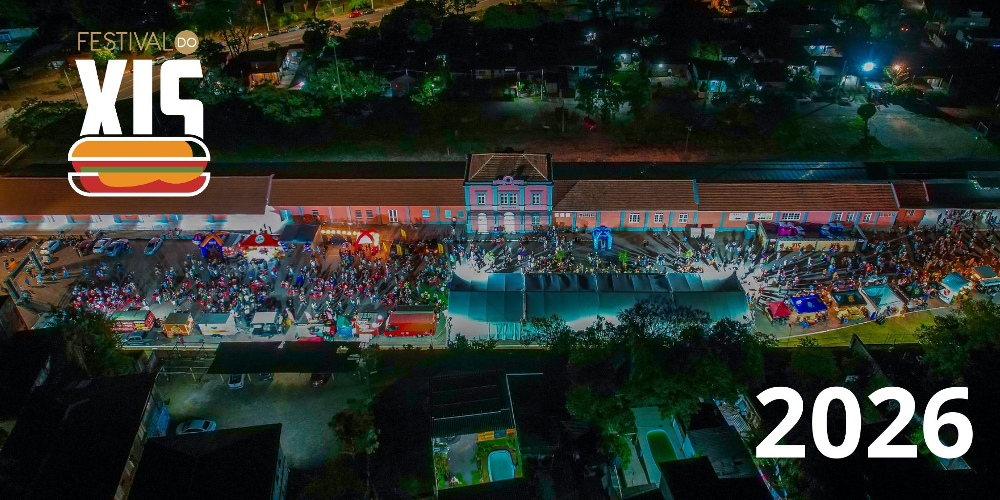
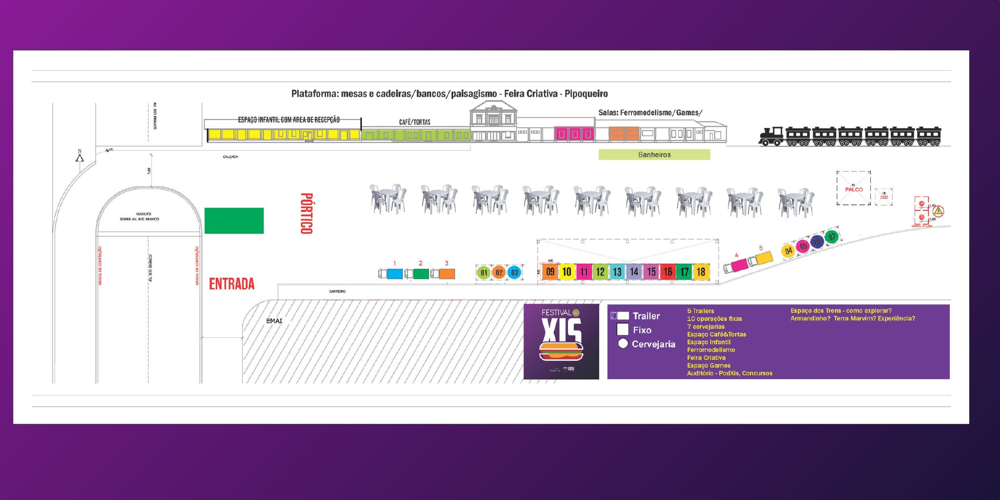
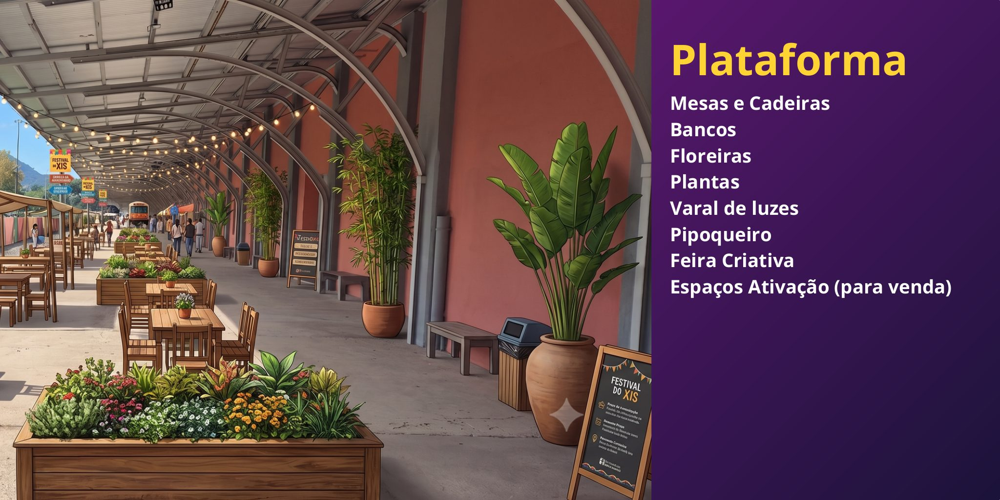
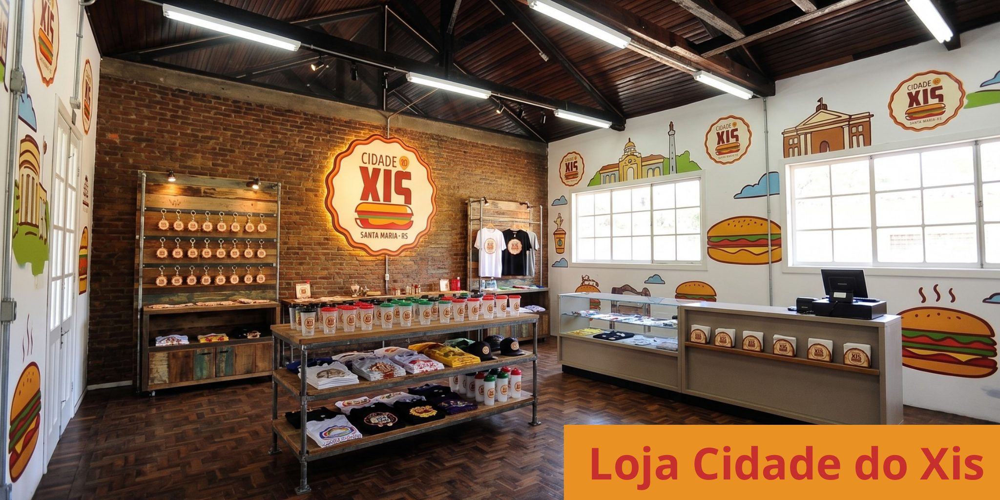
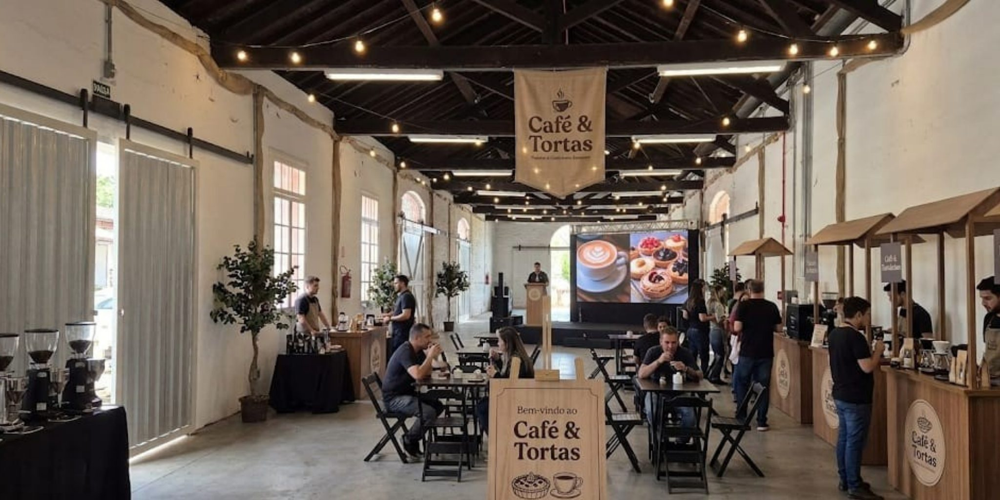
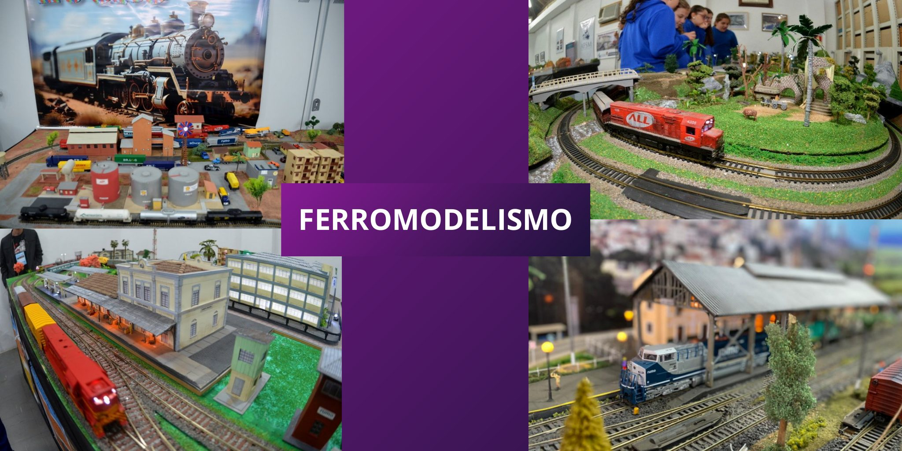
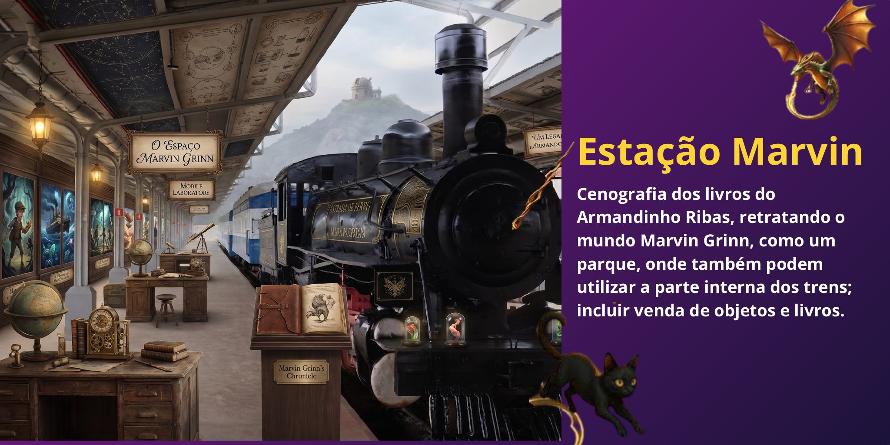
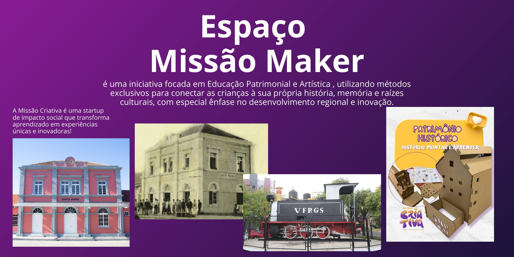

Programa Xis · Cidade do Xis
4º Festival
Nacional do Xis
Execução: Secretaria de Desenvolvimento Econômico e Inovação · Secretaria de Cultura
Secretaria de Turismo · Secretaria de Comunicação
1. Objetivo
Realizar a 4ª edição do Festival Nacional do Xis, consolidando Santa Maria como a Cidade Nacional do Xis e transformando o reconhecimento legal do lanche como patrimônio gastronômico em desenvolvimento econômico, turístico e cultural para o município.
O Festival reúne, num só espaço, as melhores operações de xis da cidade, cervejarias artesanais, o mercado criativo, o ferromodelismo e uma programação cultural completa — celebrando quem faz esse patrimônio acontecer todos os dias e movimentando toda a cadeia produtiva.
Objetivos específicos
- Gerar vitrine e faturamento direto para as operações de xis e expositores participantes;
- Fortalecer a cadeia produtiva local — padarias, fornecedores, distribuidores e serviços;
- Movimentar o turismo gastronômico e a ocupação da rede hoteleira no fim de semana do evento;
- Valorizar o patrimônio ferroviário do Largo da Gare como palco da identidade santa-mariense;
- Promover cultura, economia criativa e educação patrimonial na programação;
- Eleger, pelo voto popular, os melhores xis da cidade.
2. Justificativa
O xis é reconhecido em lei como patrimônio gastronômico de Santa Maria: a Câmara de Vereadores aprovou por unanimidade a lei que dá ao município o título oficial de Cidade do Xis, cria o Dia Municipal do Xis (28 de maio) e institui o Festival do Xis no calendário oficial de eventos.
Mais do que um símbolo afetivo, o xis é economia real: Santa Maria possui cerca de 682 lancherias ativas e 400 trailers e food trucks em operação, que consomem mais de 300 mil pães por mês. Atrás de cada lanche há uma rede de padarias, fornecedores de carne e queijo, hortifrútis, distribuidoras, entregadores e centenas de famílias.
O resultado das edições anteriores comprova a força do evento: a 3ª edição, realizada na Gare da Viação Férrea, recebeu mais de 35 mil pessoas e vendeu mais de 25 mil lanches em três dias.
O Festival integra o Programa Xis da SMDEI — política pública de capacitação, padronização de processos e acesso a crédito para a cadeia do xis — e a plataforma digital cidadedoxis.com, com vitrine, mapa, voto popular e gestão completa do evento.
3. O Evento
| Item | Descrição |
|---|---|
| Evento | 4º Festival Nacional do Xis |
| Data | 13, 14 e 15 de novembro de 2026 (sexta a domingo) |
| Local | Largo da Gare — Santa Maria/RS |
| Realização | Prefeitura Municipal de Santa Maria e Sindhturr |
| Execução | Secretaria de Desenvolvimento Econômico e Inovação, Secretaria de Cultura, Secretaria de Turismo e Secretaria de Comunicação · Programa Xis |
| Entrada | Gratuita |
| Plataforma digital | cidadedoxis.com — vitrine, mapa, voto popular e credenciamento |
Dimensões do Festival
| Dimensão | Conteúdo |
|---|---|
| Gastronômica — Operações de Xis | Trailers e estações fixas com os melhores xis da cidade; concurso pelo voto popular |
| Cervejarias artesanais | Cervejarias locais e regionais em espaços próprios |
| Cultural | Shows nos três dias, PodXis, concursos e apresentações no Auditório |
| Mercado Criativo | Feira de artesanato e economia criativa na Plataforma |
| Ferromodelismo | Exposição da Associação de Ferromodelismo nas salas da Gare |
| Experiências | Estação Marvin (cenografia dos livros de Armandinho Ribas), Espaço Infantil, Missão Maker (educação patrimonial), Café & Tortas e Loja Cidade do Xis |
Programação musical
| Dia | Horário | Atração |
|---|---|---|
| Sexta, 13/11 | 19h | Pagode 55 |
| Sexta, 13/11 | 20h30 | Especial ABBA |
| Sábado, 14/11 | 18h30 | Pro-Hits |
| Sábado, 14/11 | 20h | Rock de Galpão |
| Domingo, 15/11 | 17h | Rosa Madalena |
| Domingo, 15/11 | 19h | Tudo Di Bom |
Artistas locais e regionais compõem a programação completa, em atualização no módulo de gestão.
4. Mapa do Evento

Organização dos espaços
| Categoria | Espaços | Qtde | Caracterização |
|---|---|---|---|
| Operações de Xis — Trailers | 01 a 05 | 5 | Trailers na área externa, junto ao percurso principal |
| Operações de Xis — Estações fixas | 06 a 30 | 25 | Operações fixas em módulos padronizados |
| Cervejarias artesanais | 31 a 38 | 8 | Chope e cerveja artesanal local/regional |
| Mercado Criativo | 39 a 59 | 21 | Feira criativa na Plataforma da Gare |
| Café & Tortas | 60 a 70 | 11 | Espaço interno de cafés e confeitarias |
| Total de espaços comercializáveis | 01 a 70 | 70 |
A ocupação em tempo real (livre · reservado · ocupado), com valores e responsáveis por espaço, é controlada no módulo Gestão do Festival da plataforma Cidade do Xis.
4.1 Quadro de Espaços
Distribuição dos 70 espaços comercializáveis do Festival, com numeração corrida e identificação visual por categoria — a mesma adotada no módulo de gestão da plataforma Cidade do Xis.
Operações de Xis — Trailers (01–05) e Estações fixas (06–30)
Cervejarias artesanais (31–38)
Mercado Criativo (39–59)
Café & Tortas (60–70)
A ocupação em tempo real (livre · reservado · ocupado), valores e responsáveis são mantidos no módulo Gestão do Festival, que também exporta este mapa atualizado em PDF.
5. Ambientes do Festival






6. Plano Orçamentário
6.1 Receitas previstas
| Fonte | Base de cálculo | Valor previsto |
|---|---|---|
| Venda de espaços — Trailers (01–05) | 5 espaços × R$ — | R$ — |
| Venda de espaços — Estações fixas (06–30) | 25 espaços × R$ — | R$ — |
| Venda de espaços — Cervejarias (31–38) | 8 espaços × R$ — | R$ — |
| Venda de espaços — Mercado Criativo (39–59) | 21 espaços × R$ — | R$ — |
| Venda de espaços — Café & Tortas (60–70) | 11 espaços × R$ — | R$ — |
| Patrocínio privado | Cotas e espaços de ativação | R$ — |
| Recurso público | Emendas, convênios e dotações | R$ — |
| Total de receitas previstas | R$ — | |
6.2 Despesas previstas
| Categoria | Descrição | Valor previsto |
|---|---|---|
| Estrutura | Palco, som, luz, módulos, sanitários, limpeza | R$ — |
| Atrações culturais | Cachês da programação musical e cultural | R$ — |
| Serviços | Segurança, brigada, energia, credenciamento | R$ — |
| Comunicação | Campanha, sinalização e material gráfico | R$ — |
| Ambientação | Paisagismo, mobiliário, cenografia dos ambientes | R$ — |
| Total de despesas previstas | R$ — | |
7. Encerramento
Este documento consolida o planejamento do 4º Festival Nacional do Xis e integra a plataforma Cidade do Xis, onde a gestão do evento — espaços, participantes, patrocinadores, orçamento e prestação de contas — é realizada e mantida atualizada pela equipe.
Assinam este documento
Realização: Prefeitura Municipal de Santa Maria e Sindhturr · Execução: Secretarias municipais abaixo
de Santa Maria
Realização
Realização
Econômico e Inovação
Santa Maria · RS, novembro de 2026